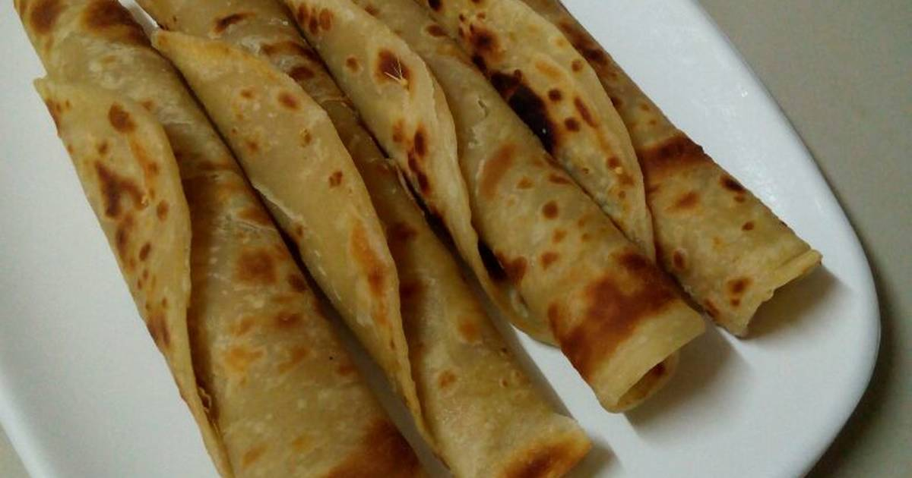

Chapati

Chapati Recipe
It is also known as roti, rotli, safati, shabaati, phulka, chapo, and roshi. It is a staple food in East Africa, India, Nepal, Bangladesh, Pakistan, Sri Lanka, Arabian Peninsula, and the Caribbean.
Chapati is an unleavened flat-bread originating from the Indian sub-continent.
Ingredients
- 3 cups of flour
- 1½ cups of warm water
- 1 teaspoon of salt
- 1 teaspoon of sugar
- Cooking oil
Steps
- Add 3 cups of flour in a bowl
- Add salt, sugar, 2 tbsp of oil and 1½ cups of water in a separate jar/ bowl.
- Stir until the salt and sugar dissolves.
- Add the liquid mixture in step 2 in the flour bowl (step 1) and mix well.
- Keep kneading for 10 minutes and add flour if needed until the dough becomes non-sticky.
- Add 2-3 tbsp of oil and continue kneading until the oil mixes well and the dough is soft.
- Cover the dough and leave it for 40 minutes.
- After the 40 minutes, divide the dough into 10 - 15 equal parts making ball like shapes.
- Arrange them in a flat surface dusted with flour(Cover with a damp tablecloth to avoid drying).
- Dust flour in the flat place and take one of the balls and start rolling with a rolling pin to a circular shape.
- Brush oil on top and roll it inwards to form a shape-like a rope.
- Create a coil-like shape and press the ball down with your palm to make it flat.
- Repeat this process to the rest of the remaining balls of dough.
- Start rolling each of the coil-like shape doughs with the rolling pin to form a circular shape again.
- In a hot pan, place the rolled out circular chapati and fry each side with little oil until its golden brown on medium heat.
- Place your cooked chapati in a flat plat and cover with an aluminum foil.
- Repeat this step to the rest of the coil-like dough.
- Serve with your favorite stew